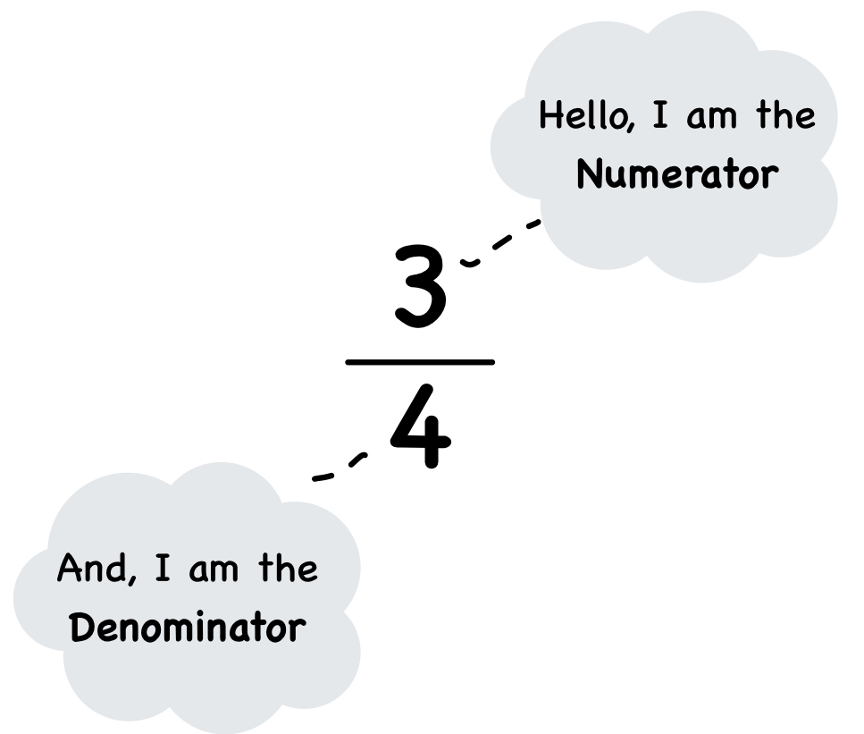

Introduction to Fractions
Fraction:
A fraction is a way of representing a part of a whole. It consists of two numbers:
- Numerator: The number on the top, which shows how many parts are being considered.
- Denominator: The number on the bottom, which shows the total number of equal parts in the whole.
For example, in the fraction
- 3 (numerator) tells us we have 3 parts.
- 4 (denominator) tells us the whole is divided into 4 equal parts. 
Identifying the Numerator and Denominator
In any fraction, look at the position of the numbers:
- The numerator is above the fraction line.
- The denominator is below the fraction line.
Example: In
- Numerator = 7
- Denominator = 10
Unit Fractions :
A unit fraction is a fraction where the numerator is always 1, and the denominator is any positive integer.
Example: , ,
Unit fractions represent one part of a whole that is divided into equal parts.
Like and Unlike Fractions
- Like Fractions: Fractions that have the same denominator are called like fractions. These are easier to compare or calculate with because their parts are already divided equally.
Example: , , - Unlike Fractions: Fractions that have different denominators are called unlike fractions. To compare or operate on unlike fractions, we first need to convert them into like fractions by finding a common denominator.
Example: , ,
Proper, Improper, and Mixed Fractions
Fractions come in different forms depending on the relationship between the numerator and the denominator. Let’s explore:
- Proper Fractions: A fraction where the numerator (top number) is smaller than the denominator (bottom number).
Example: ,
Note: Proper fractions represent a value less than 1. - Improper Fractions: A fraction where the numerator is greater than or equal to the denominator.
Example: ,
Note: Improper fractions represent a value greater than or equal to 1. - Mixed Fractions: A combination of a whole number and a proper fraction.
Example: 2, 6
Note: Mixed fractions is another way of representing an improper fraction.
Converting Between Mixed and Improper Fractions :
- To convert a mixed fraction to an improper fraction: Multiply the whole number by the denominator, then add the numerator. Place this result over the denominator.
Example: 3 = = - To convert an improper fraction to a mixed fraction: Divide the numerator by the denominator. The quotient becomes the whole number, and the remainder becomes the numerator of the fraction.
Example: = 3